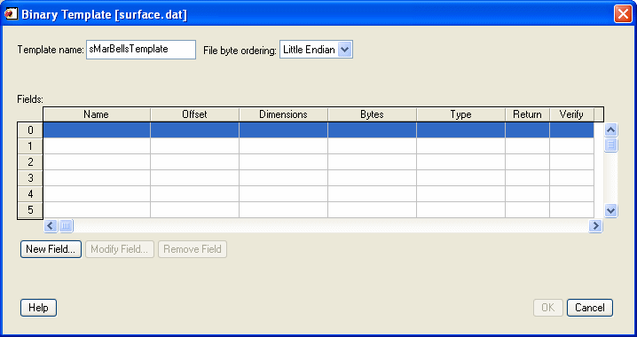
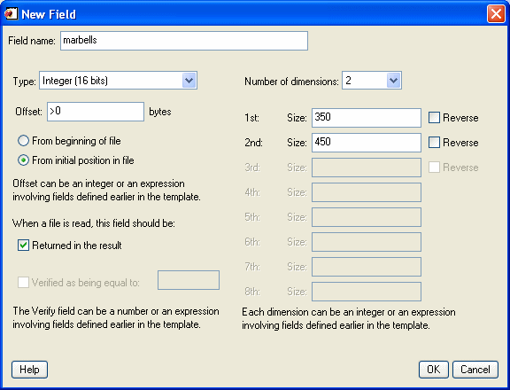

The BINARY_TEMPLATE function presents a graphical user interface which allows the user to interactively generate a template structure for use with READ_BINARY.
The graphical user interface allows the user to define one or more fields in the binary file. The file may be big, little, or native byte ordering.
Individual fields can be edited by the user to define the dimensionality and type of data to be read. Where necessary, fields can be defined in terms of other previously defined fields using IDL expressions. Fields can also be designated as “Verify”. When a file is read using a template with “Verify” fields, those fields will be checked against a user defined value supplied via the template.
Note: Greater than (“>”) and less than (“<“) symbols can appear in the “New Field” and the “Modify Field” dialogs where the offset value is displayed. The presence of either symbol indicates that the supplied offset value is “relative” from the end of the previous field or from the initial position in the file. Greater than means offset forward. Less than means offset backward. “>0” and “<0” are synonymous and mean “offset zero bytes”. You can delete these special symbols (thereby indicating that their corresponding offset value is not “relative”) by typing over them in the “New Field” or “Modify Field” dialogs.
Result = BINARY_TEMPLATE ( [Filename] [, CANCEL=variable] [, GROUP=widget_id] [, N_ROWS=rows] [, TEMPLATE=variable] )
This function returns an anonymous structure that contains the template. If the user cancels out of the graphical user interface and no initial template was supplied, it returns zero.
A scalar string containing the name of a binary file which may be used to test the template. As the user interacts with the BINARY_TEMPLATE graphical user interface, the user’s input will be tested for correctness against the binary data in the file. If filename is not specified, a dialog allows the user to choose the file.
Set this keyword to a named variable that will contain the byte value 1 if the user clicked the “Cancel” button, or 0 otherwise.
The widget ID of an existing widget that serves as “group leader” for the BINARY_TEMPLATE interface. When a group leader is killed, for any reason, all widgets in the group are also destroyed.
Set this keyword to the number of rows to be visible in the BINARY_TEMPLATE’s table of fields.
Note: The N_ROWS keyword is analogous to the WIDGET_TABLE and the Y_SCROLL_SIZE keywords.
Set this keyword to structure variable containing an initial template (usually from a previous call to BINARY_TEMPLATE). This template structure will be used to fill in the initial fields in the new BINARY_TEMPLATE. If TEMPLATE is specified and the user cancels out of the dialog, the specified template will be returned as the Result.
Use the following command to launch the Binary Template dialog so that a structure can be defined for the file, head.dat:
sTemplate = BINARY_TEMPLATE(FILEPATH('head.dat', $
SUBDIRECTORY=['examples', 'data']))
Note: If no filename is supplied in the call to the BINARY_TEMPLATE function, a file selection dialog is displayed prior to the first BINARY_TEMPLATE screen.
A binary template describes of the format of the data in a binary file, and can be used to successfully import binary data from any file that shares has structure. The Binary Template dialog allows you to specify characteristics of each field within a binary file, and returns a structure containing the template information. The READ_BINARY function accesses the data in a binary file, using the template to determine how to import the data correctly. (You only have to explicitly call READ_BINARY when you call BINARY_TEMPLATE from the command line. When you start the BinaryTemplate dialog from an iTool or the workbench, the READ_BINARY routine is called for you.)
After starting the BinaryTemplate dialog, complete the following steps to create the template:
| 1. | Select the binary file. In the Select File to Open dialog, select surface.dat from the examples\data subdirectory of your IDL distribution. This file contains an integer array of elevation data of the Maroon Bells mountains, a group of mountains located among the Rocky Mountains of Colorado.The Binary Template window is displayed. |
| 2. | Define template and data characteristics. Define the following in this example before defining field information: |
| • | Template Name of sMarBellsTemplate |
| • | File byte ordering is set to Little Endian |
The following table describes each of these options.
|
 |
| 3. | Open the New Field dialog. Fields are read in the order in which they are listed in the main dialog for BINARY_TEMPLATE, with offsets being added to the current file position pointer before each field is read. Click New Field... to enter the description of a new field. |
Note: If a field has already been defined, clicking in the Return column will toggle the value of the field between Yes and No. Fields that are not marked for return can be used for calculations by other fields in the template. At least one field must be marked Yes for return in order for the BINARY_TEMPLATE function to return a template.
| 4. | Define characteristics of the field. Use the New Field dialog to define the data type and dimensions of the field as well as any offsets. In this example, configure the following: |
| • | Field name is marbells |
| • | Type is Integer |
| • | Offset is 0From beginning of file |
| • | Field is Returned in the result when read |
| • | Number of dimensions value is 2, and are defined as 350 and 450 respectively |
The following table describes the New Field dialog options:
|
Field name |
Enter a name that describes the data field. |
|
Type |
Select the data type of the field from a droplist that offers the following IDL types: byte, integer, long, float, double, complex, dcomplex, uint, ulong, long64 and ulong64. Strings are read as an array of bytes for later conversion to type STRING. |
|
Offset |
Specify the data offset using integer values, field names, or any valid IDL expression. Absolute integer — defines a fixed location (in bytes) from the beginning of the file or the initial file position for an externally opened file. Relative integer — uses a preceding > or < character, to indicate a positive (>) or negative (<) byte offset relative to the current file position pointer after the previous field (if any) is read. Expression — can include the names of fields that will be read before the current field — that is, the field number of the referenced field must be lower than the field number of the field being defined. From beginning of file — read from the beginning of the file plus any offset. From initial position in file/From end of previous file — read from the beginning of the file or from the end of the previous field plus any offset. |
|
When file is read... |
Returned in the result — select this to return the field when the file is read Verified as being equal to — select this and define the condition. The Verify field can contain an integer, field name, or any valid IDL expression. Only scalar fields can be verified. READ_BINARY reports an error if a verification fails. |
|
Number of dimensions |
Select the number of dimensions of the field ranging from 0 (scalar) to 8 (which is the maximum number of dimensions that an IDL variable can have.) The Size of each dimension can be an integer, field name, or any valid IDL expression. Select Reverse to read any of the first three dimensions of array data in reversed order. |
Note: If BINARY_TEMPLATE is called by a program that is running in the IDL Virtual Machine, the Offsets, Verify, and Size fields can contain integers or field names, but not an IDL expression.
|
 |
| 5. | Create the template. Click OK to create the new field definition. This file contains a single field so click OK on the Binary Template dialog to create the template. If needed, you could click New Field to define additional data fields. |
The BINARY_TEMPLATE function returns a structure variable containing the template. The result of the previous actions depends on the location from which you launched the Binary Template dialog. The READ_BINARY function, which reads data from a file according to the template specification, is automatically called when you access the Binary Template dialog from iTools. From the command line, you must explicitly read the binary data with the template specification.
After defining the structure of your binary data using the Binary Template dialog, refer to the appropriate section:
| • | iTools binary data access — the binary data is read and placed in the Data Manager. If it is not automatically displayed, use the Insert Visualization dialog to display fields of the data. |
| • | Command line binary data access — the template is a structure defining the format of the binary data. Access the data using READ_BINARY, and specify the template (or other characteristics) as parameters of the data access operation. See Working with a READ_ASCII Data Structure for details. |
Note: You can create a SAVE file of a template in order to use it from session to session. See Example: Create a SAVE File of a Custom ASCII Template for a related example.
|
5.3 |
Introduced |
|
7.1 |
Added the Help button to the interface. |